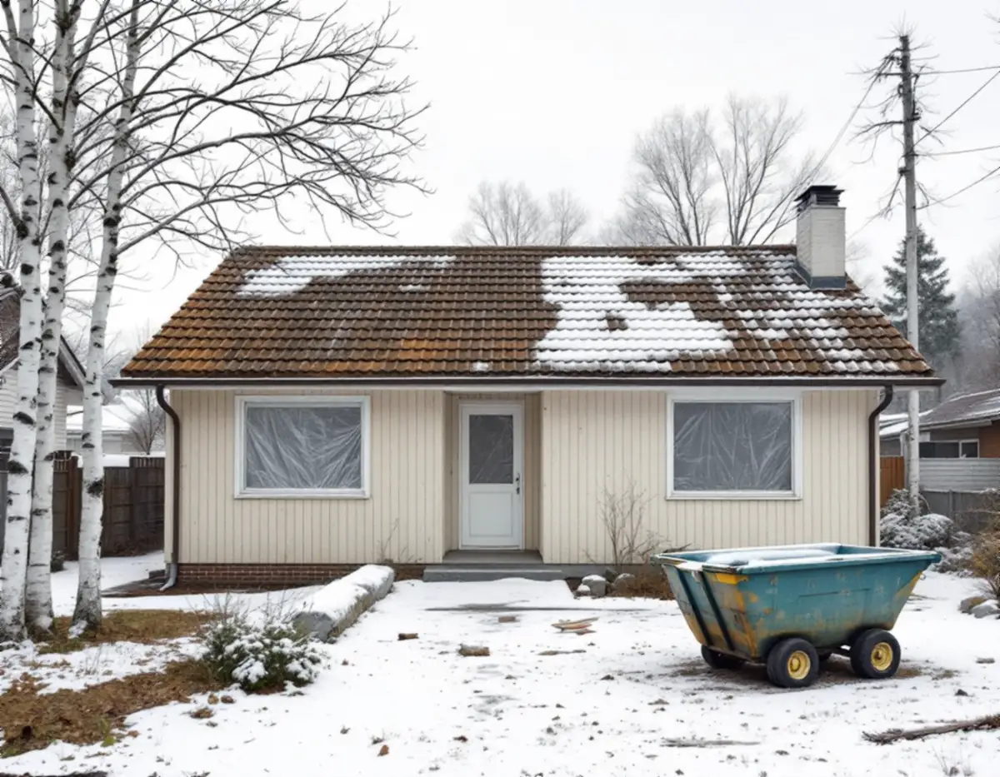
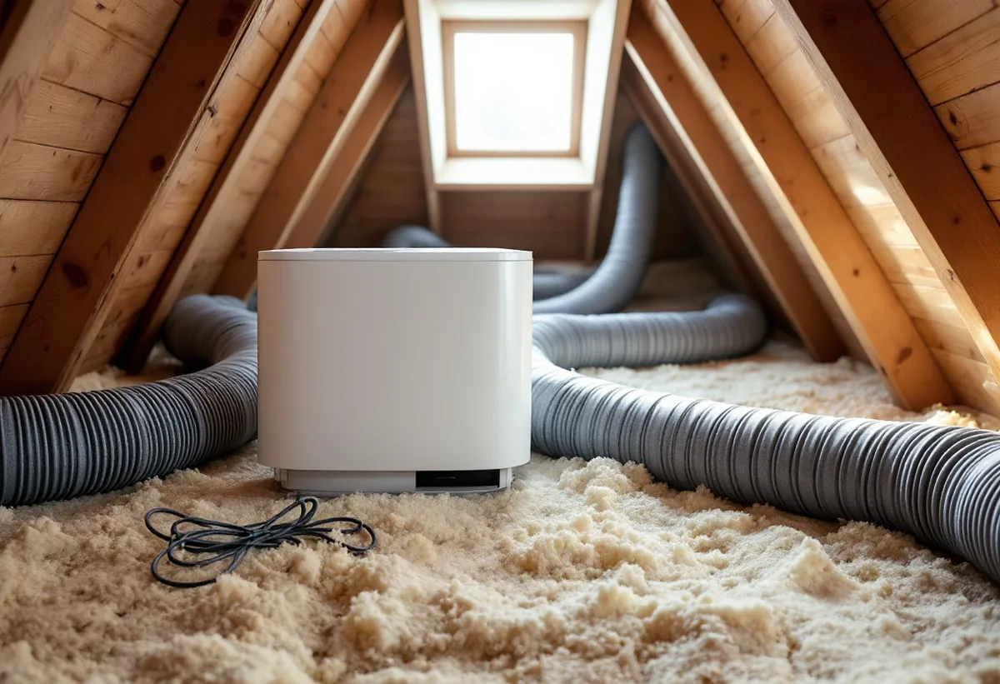
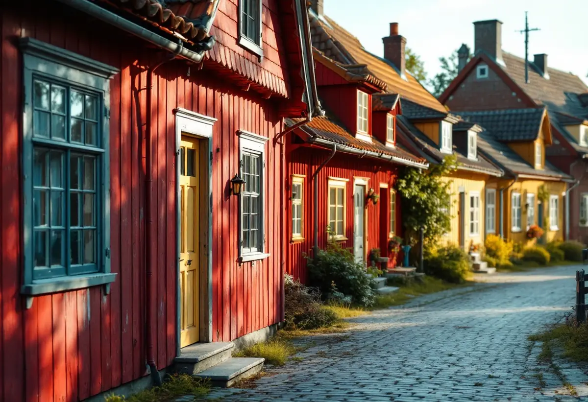

Platsbesök
Gratis besök där vi går igenom huset, ventilation och avlopp.
En totalrenovering i Märsta, Sigtuna stad eller Rosersberg handlar ofta lika mycket om installationerna som om ytorna. Geal Entreprenad AB renoverar hela huset, tar fram handlingarna som Sigtuna kommun vill ha och planerar arbetet så att anmälan och startbesked finns innan vi börjar.

Sigtuna kommun skriver att du måste göra en anmälan och invänta startbesked innan du installerar ett nytt ventilationssystem, och att samma sak gäller om du ändrar ett befintligt. Innebär åtgärden en stor förändring av byggnadens utsida – till exempel ett aggregat eller kanaler på fasaden – behövs bygglov i stället för anmälan.
Till anmälan vill kommunen ha situationsplan, planritning, fasadritningar, förslag till kontrollplan, konstruktionsritning och utlåtande från konstruktör. Tomtkartan för situationsplanen laddas ner gratis från kommunen. Byts ventilationen vid en totalrenovering, medan tak, väggar och golv ändå är öppna, ska anmälan vara klar innan rivningen börjar.

Enligt kommunen krävs anmälan om du väsentligt ändrar eller gör en ny installation för vatten eller avlopp. En ändring räknas som väsentlig när installationen påverkar byggnadens bärande konstruktion eller när ett stambyte påverkar VA-stammarna. Till anmälan hör en redovisning av vatten- och avloppsanordningarna, plan- och sektionsritning och förslag till kontrollplan, och vid omfattande arbeten en kontrollansvarig.
Ska huset anslutas till kommunens nät görs anmälan till Sigtuna Vatten och renhållning, SIVAB. Har fastigheten eget avlopp är det något annat: att anlägga eller ändra ett enskilt avlopp är tillståndspliktigt enligt miljöbalken. Ska ett nytt badrum kopplas till ett enskilt avlopp tar vi därför upp frågan tidigt.
Sigtuna kommun påminner om att alla ändringar ska göras varsamt och att särskilt värdefulla byggnader inte får förvanskas. Kommunen ber fastighetsägare behålla formspråk, proportioner och karaktärsdrag som är typiska för byggnaden och tiden, och att bevara ursprungliga material och detaljer – eller ersätta dem med samma material när de måste bytas.
För Sigtuna stad finns en bevarande- och förnyelseplan och för dalgången mellan Odensala och Hova särskilda riktlinjer. Är huset särskilt värdefullt kan bygglov krävas för sådant som annars är lovfritt, till exempel fasadändring, rivning av en byggnadsdel eller solceller. Vid en totalrenovering av ett äldre hus i Sigtuna stad lägger vi därför upp arbetet inifrån och behåller fönster, dörrar och fasad om inget annat är bestämt.
Arlanda flygplats är riksintresse enligt miljöbalken, och flygbullret påverkar stora delar av kommunen. Kommunen skriver att den kontaktar Swedavia för ett utlåtande innan den beslutar om en nybyggnad eller tillbyggnad inom flygplatsens influensområde. Det gäller alltså inte en ren invändig renovering, men väl om huset byggs ut samtidigt.
I bygglovsbedömningen väger kommunen bland annat in bullersituationen, hur avloppet ska lösas och markens radonhalt. Ibland kan bygget godtas om bullret begränsas, till exempel genom avskärmning eller isolering. Vill du bygga till i samma veva beskriver vi reglerna under tillbyggnad i Sigtuna. Badrummet för sig finns under badrumsrenovering i Sigtuna.

Gratis besök där vi går igenom huset, ventilation och avlopp.
Ritningar, kontrollplan och utlåtanden tas fram.
Anmälan eller lov – startbesked innan arbetet börjar.
Det som ska bort rivs i rätt ordning.
Ventilation, VA och el byggs om.
Golv, väggar, kök och bad, sedan slutbesked där det krävs.
I ett småhus räknar Skatteverket bland annat rivning av väggar, ny planlösning, tilläggsisolering, kakel och klinker och andra förbättringsarbeten som rotarbete. Avdraget gäller arbetskostnaden, inte material och resor.
Avdraget är högst 30 procent av arbetskostnaden och högst 50 000 kronor per person och år. Äger ni bostaden två kan båda göra avdrag. Där avdraget gäller drar Geal det direkt på fakturan.
Om ventilationen byts, om VA-stammar påverkas, om huset har enskilt avlopp, hur mycket som rivs och om ursprungliga material ska bevaras. Efter ett gratis platsbesök får du ett skriftligt kostnadsförslag.
Renovera hela huset eller lägenheten.
Villarenovering →Takbyte, takbesiktning och plåtarbeten.
Takläggare i Sigtuna →Sigtuna stad, Märsta och Arlanda.
Takrenovering i Sigtuna →Potten, Arlanda och gårdshusen.
Attefallshus i Sigtuna →Anmälan, fläkt och dusch i stället för badkar.
Badrumsrenovering i Sigtuna →Nytt hus, gästhus och större tomt.
Byggföretag i Sigtuna →Gatufasad, gårdsfasad och uthus i stadskärnan.
Fasadmålning i Sigtuna →Puts i stadskärnan, panel i dalgången.
Fasadrenovering i Sigtuna →Arlanda, ljudisolering och fönster i Sigtuna.
Fönsterbyte i Sigtuna →Bevarandeplanen, gammalt glas och fönsterkulörer.
Fönsterrenovering i Sigtuna →Golv på platta, fuktmätning och radon.
Golvläggare i Sigtuna →Plankgolv i äldre trähus.
Golvslipning i Sigtuna →Ventilation, avlopp och anmälan.
Köksrenovering i Sigtuna →Stadskärnan, Märsta och Rosersberg.
Målare i Sigtuna →Plåttak, rännor och beslag i Sigtuna.
Plåtslagare i Sigtuna →Staket, dörrar och gårdshus i stad och dalgång.
Snickare i Sigtuna →Lov, checklista och gårdarnas tegel.
Takbyte i Sigtuna →Ny tapet i äldre trähus.
Tapetsering i Sigtuna →Arlanda, uterum och handlingarna.
Tillbyggnad i Sigtuna →